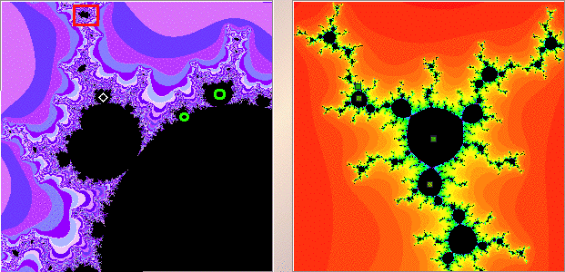

|  |
| The left window the white diamond indicates the c-value for Julia set shown in the right window. |
| In the right window, shift-click or right click near |
| Now we see the upper cluster consists of 4 points. |
| Altogether, the cycle consists of 8 points. |
| Click the Julia set window to return to the full Julia set. |
| Click each of the green circles to see the corresponding cycle. |
| Click the red box to magnify that box. |
Return to Samples.